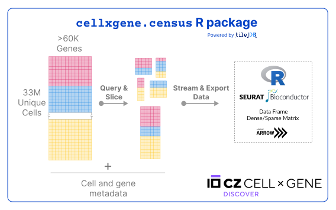

R package cellxgene.census V1 is out!
Published: August 7th, 2023
The Census team is pleased to announce the release of the R package cellxgene.census. 🎉 🎉
This has been long coming since our Python release back in May. Now, from R, computational biologists can access the Census data which is the largest standardized aggregation of single-cell data, composed of >33M cells and >60K genes.
With cellxgene.census in a few seconds users can access any slice of Census data using cell or gene filters across hundreds of datasets. The data can be fetched in an iterative fashion for bigger-than-memory slices of data, or quickly exported to basic R structures, and Seurat or SingleCellExperiment for downstream analysis.

Installation and usage
Users can install cellxgene.census and its dependencies following the installation instructions.
To learn more about the package please make sure to check out the following resources:
Census R package is made possible by tiledbsoma
The cellxgene.census package relies on TileDB-SOMA R’s package tiledbsoma for all of its data access capabilities as shown in the next section.
CZI and TileDB have worked closely on the development of tiledbsoma and recently upgraded it from beta to its first stable version. Release notes can be found here.
Efficient access to single-cell data for >33M cells from R
Census hosts ever-growing data releases from CZ CELLxGENE Discover, representing the largest aggregation of standardized single-cell data.
Census data are accompanied by cell and gene metadata that have been standardized on ontologies across all datasets hosted in CZ CELLxGENE Discover. For example all cell types and tissues have been mapped to a value of the CL and UBERON ontologies, respectively. You can find more about the data in the Census data and schema page.
With the cellxgene.census R package, researchers can have access to all of these data and metadata directly from an R session with the following capabilities:
Easy-to-use handles to the cloud-hosted Census data
From R users can get a handle to the data by opening the Census.
library("cellxgene.census")
census <- open_soma()
# Your work!
census$close()
Querying and reading single-cell metadata from Census
Following our Census data and schema, users can navigate and query Census data and metadata by using any combination of gene and cell filters.
For example, reading a slice of the human cell metadata for more than 300K cells with Microglial cells or Neurons from female donors:
library("cellxgene.census")
census <- open_soma()
# Open obs SOMADataFrame
cell_metadata <- census$get("census_data")$get("homo_sapiens")$get("obs")
# Read as an iterator of Arrow Tables
cell_metadata <- cell_metadata$read(
value_filter = "sex == 'female' & cell_type %in% c('microglial cell', 'neuron')",
column_names = c("assay", "cell_type", "sex", "tissue", "tissue_general", "suspension_type", "disease")
)
# Retrieve all metadata at once
cell_metadata <- cell_metadata$concat()
# Convert to R tibble (dataframe)
cell_metadata <- as.data.frame(cell_metadata)
census$close()
Exporting Census slices to Seurat and SingleCellExperiment
Similarly, users can query both the single-cell data along with its metadata and export them to Seurat or SingleCellExperiment objects for downstream analysis:
library("cellxgene.census")
census <- open_soma()
organism <- "Homo sapiens"
gene_filter <- "feature_id %in% c('ENSG00000107317', 'ENSG00000106034')"
cell_filter <- "cell_type == 'leptomeningeal cell'"
cell_columns <- c("assay", "cell_type", "tissue", "tissue_general", "suspension_type", "disease")
# Get Seurat object
seurat_obj <- get_seurat(
census = census,
organism = organism,
var_value_filter = gene_filter,
obs_value_filter = cell_filter,
obs_column_names = cell_columns
)
# Get SingleCellExperiment object
sce_obj <- get_single_cell_experiment(
census = census,
organism = organism,
var_value_filter = gene_filter,
obs_value_filter = cell_filter,
obs_column_names = cell_columns
)
census$close()
Streaming data incrementally in chunks
Sometimes Census queries can be too large to be loaded in memory. TileDB-SOMA allows users to query Census data in an incremental fashion using iterators.
To find out more about iterable-based queries you can check out the following resources: